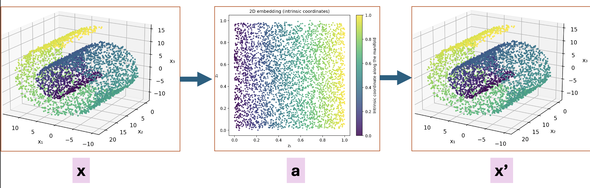
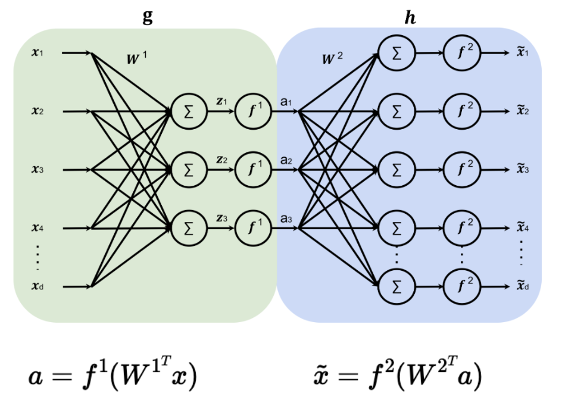

Generative Models - Questions
- In the scenario of taking multiple MIT students and measuring their heights to get an average height of an MIT student, what is an example of a sample?
- Any student
- Any MIT student
- Any MIT student whose height was measured
- None of the above
- In the scenario of taking multiple MIT students and measuring their heights to get an average height of an MIT student, what is an example of a density function?
- Normal distribution with mean equal to the average of measured heights
- f(x) = 1/|students whose height was measured|
- All of the above
- None of the above
- What are the differences between the data-generating distribution \(p(x)\), the parametric model \(p_\theta(x)\), and the empirical distribution \(\hat{p}(x)\)?
- \(p(x)\) is the underlying distribution, \(p_\theta(x)\) is our approximation of \(p(x)\), and \(\hat{p}(x)\) is the real-world distribution we cannot measure
- \(p(x)\) is the underlying distribution, \(p_\theta(x)\) is our approximation of \(p(x)\), and \(\hat{p}(x)\) is the real-world distribution we can measure
- \(p(x)\) is the underlying distribution, \(p_\theta(x)\) is the real-world distribution we can measure, and \(\hat{p}(x)\) is our approximation of \(p(x)\)
- \(p(x)\) is the real-world distribution we can measure, \(p_\theta(x)\) is the underlying distribution, and \(\hat{p}(x)\) is our approximation of \(p(x)\)
- What is the main property we want \(p_\theta(x)\) to have?
- Be as close to \(\hat{p}(x)\) as possible
- Be as close to \(p(x)\) as possible
- Be as different from \(p(x)\) as possible
- Be as different from \(\hat{p}(x)\) as possible
Can we measure data-generating distribution \(p(x)\)?
(a) Yes.
(b) No.How do we evaluate how good \(p_\theta(x)\) is?
- Measure the distance to \(p(x)\), want small
- Measure the distance to \(p(x)\), want big
- Measure the distance to \(\hat{p}(x)\), want small
- Measure the distance to \(\hat{p}(x)\), want big
In the modified setting, \(x = f_\theta(z)\), what is \(z\)?
(a) Sample.
(b) Random noise.
(c) Parameter vector.
(d) Feature vector.In the modified setting, \(x = f_\theta(z)\), what is \(\theta\)?
(a) Sample.
(b) Random noise.
(c) Parameter vector.
(d) Feature vector.In the modified setting, \(x = f_\theta(z)\), what is \(x\)?
(a) Sample.
(b) Random noise.
(c) Parameter vector.
(d) Feature vector.
—---
- What do latent variant models try to do?
- Map simple data to a latent space with a more complex structure
- Map complex data to a latent space with a simpler structure
- Cram data into a smaller space
- Cram data into a bigger space

Given the example above, what do you call going from \(x\) to \(a\)? (a) Encoding.
(b) Decoding.
(c) None of the above.Given the example above, what do you call going from \(a\) to \(x'\)?
(a) Encoding.
(b) Decoding.
(c) None of the above.Given the example above, what is the main goal in representation learning?
- Find an encoder
- Find a decoder
- Find an encoder and decoder
- None of the above
- What is an architecture that can be used for representation learning?
- Just MLP
- NN, where the first half decreases the dimension of the input till bottleneck is reached, and the second half increases the dimension of the bottleneck
- Autoencoder
- Just CNN

- Given the above simple autoencoder, which of the following describe(s) the reconstruction loss?
- \(L = \frac{1}{N} \sum_i^N (||\hat{x} - x||^2)\)
- \(L = \frac{1}{N} \sum_i^N (||f^2((W^1)^T f^1((W^2)^T x)) - x||^2)\)
- \(L = \frac{1}{N} \sum_i^N (||f^2((W^2)^T f^1((W^1)^T x)) - x||^2)\)
- \(L = \frac{1}{N} \sum_i^N (||f^1((W^1)^T f^2((W^2)^T x)) - x||^2)\)
- Given the above simple autoencoder, if \(x \in \mathbb{R}^10\), which of the following dimensions for \(a\) does not make sense?
- 3
- 7
- 10
- 13
- What is one of the main potential problems with an autoencoder?
(a) Can get an arbitrarily simple latent space.
(b) Can get an arbitrarily complex latent space.
(c) The architecture is hard to train.
(d) The architecture is easy to train.
- How is the problem of arbitrarily complex latent space solved?
- Remove a constraint from the latent space
- Variational autoencoders. (VAE)
- Introduce an additional constraint to the latent space
- None of the above
What is the process for going from \(x\) to its reconstruction in VAE?
(a) Run encoder on \(x\). It will produce the mean \(\mu\). Run \(\mu\) through the decoder to get the reconstruction.
(b) Run encoder on \(x\). It will produce a mean \(\mu\) and standard deviation \(\sigma\). Sample random number from \(\mathcal{N}\)(\(\mu, \sigma^2I\)). Run that number through the decoder to get the reconstruction.
(c) Run encoder on \(x\). It will produce the mean \(\mu\) and standard deviation \(\sigma\). Run those numbers through the decoder to get the reconstruction.
(d) None of the above.What are the properties that we want a learned VAE to have?
- Good reconstruction of input.
- Want mean to be close to 0 and variance to be big.
- Want mean to be close to 0 and variance to be small.
- Want mean to be close to 0 and variance to be close to 1.
- What are some problems with VAE?
- Can get an arbitrarily complex latent space
- The encoder is very complicated
- The architecture is hard to train
- The architecture is easy to train
What is the main function we want a diffusion model to have?
(a) Want a model that can undo noise (denoising).
(b) Want a model that can add noise.
(c) Want a model that generates images.
(d) None of the above.How can a diffusion model be used to generate random (realistic) images?
(a) Sample a noisy image from gaussian.
(b) Sample a noisy image from gaussian and repeatedly denoise.
(c) Sample a noisy image from gaussian and denoise once.
(d) None of the above.How is the denoiser trained in practice?
- Predict the denoised image
- Predict the noise added to the input
- Predict any image
- None of the above
- What architecture is typically used?
(a) Just CNN.
(b) Unet.
(c) Just MLP.
(d) None of the above.
What is a token in text generation?
(a) A coin.
(b) A small piece of text, like a word or a syllable.
(c) A number.
(d) None of the above.What is the goal of a text generative model?
- Predict a sentence
- Predict multiple words at a time
- Next token prediction
- None of the above
- Why is the next-token prediction model called autoregressive?
- We repeatedly call f_\theta on the output from the last step, attached to the input of the last step
- We repeatedly call f_\theta on the output from the last step, attached to the initial input
- We repeatedly call f_\theta on the initial input
- None of the above
How is text represented for text-generative models?
(a) As token embeddings in numerical space.
(b) As word embeddings in numerical space.
(c) As an array of words.
(d) As a big matrix of one-hot vectors for each word.What are the main properties of word embeddings?
- Map sentences to a lower-dimensional space
- Map words to a lower-dimensional space
- Words that are close in meaning are close in space
- Sentences that are close in meaning are close in space
How is the context of the text taken into account in text generative models?
(a) Input contains the full text that has the context.
(b) Context is ignored.
(c) The model predicts the context.
(d) None of the above.What architecture is typically used for text generative models?
(a) Just MLP.
(b) RNN.
(c) Just CNN.
(d) attention/transformers.
Bonus: 33. Evaluation is hard since no ground truth to compare to. What is typically used?
- Sample quality (does it look real)
- Sample diversity (samples should not repeat)
- Sample coverage (all possibilities covered)
- Faithfulness to the data (too creative)
- Human evaluation
- Proxy metrics
- Downstream tasks
- What are some ethical problems?
- Data sourcing/attribution
- Deep fakes
- Data privacy
- Bias amplification
- environment/energy cost